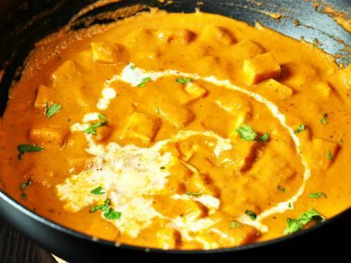

MY FAVOURITE FOOD
Paneer makhani (also called as butter paneer) is a slightly sweet creamy dish of paneer,originating from indian subcontinent,in which the gravy is prepared usually with butter,tomatoes,cashews or cream.
How to cook butter paneer
INGREDIENTS
- 250 grams paneer(cut into rectangles)
- 6 Tomatoes
- 15 kaju(cashew nuts)
- garlic cloves(crushed)
- 2 tbsp butter
- Salt for taste
- Red chilli pwder
- 2 tbsp fenugreek leaves
- 1 tsp sugar
- Cream (optional)
- 2-3 tbsp milk
METHOD
- Add 1 tbsp butter in a pan. Once it melts ,add garlic,cinnamon and cashews.🥣
- Fry , till the colour changes. Then add tomatoes.🍅
- Saute till the the tomatoes become soft and add chilli powder and salt .🥗
- Saute for 2-3 minutes and then grind to it into a fine paste.🥢
- Take another pan - Add 1 tbsp butter and grill the paneer pieces till golden brown on both sides.Remove the paneer pieces.🍲
- In the same pan add the tomato-cashew paste .Let it simmer for 3-4 mintues.🥄
- Now add kasoori methi and sugar. Let it simmer for 1 mintue.🥛
- Add milk ,paneer pieces and top it with cream if desired.🍳
- Serve hot.🥘
